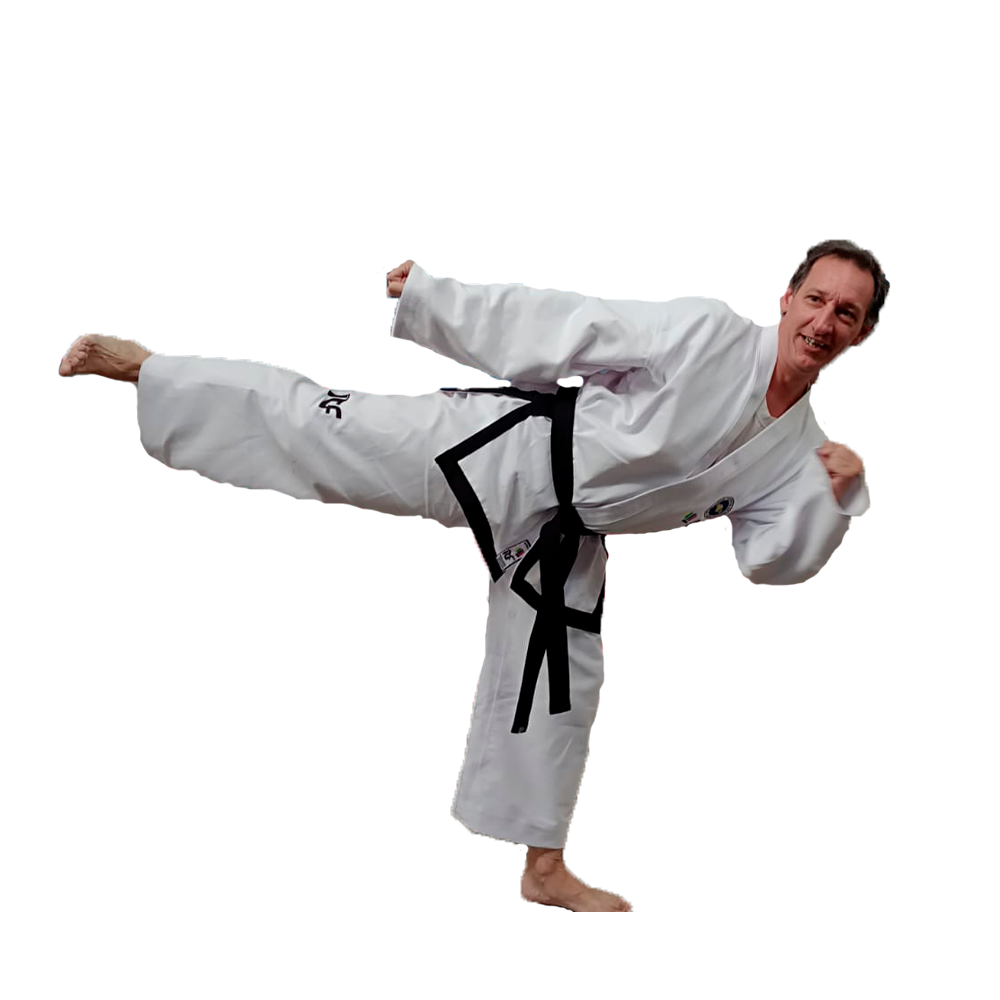

El taekwondo ITF es una forma de arte marcial centrada en la práctica de técnicas de patada, puñetazo y bloqueo, así como en la realización de formas, sparring y técnicas de autodefensa. Sus principales fortalezas incluyen la promoción de valores como la disciplina, la perseverancia, el respeto y la autoconfianza, así como el énfasis en la meditación y la filosofía detrás de las técnicas. Además de los beneficios físicos, el taekwondo ITF también puede mejorar la salud mental y emocional de los estudiantes, reducir el estrés y la ansiedad, y mejorar las relaciones con los demás.
Instructor

Hola, soy Andrés Galanti, El Taekwondo es un arte marcial coreano que se centra en el uso de piernas y manos para la defensa personal. Además, es una forma de vida basada en los valores morales y éticos transmitidos por el General Choi Hong Hi. Como instructor, mi objetivo es guiar a los estudiantes hacia el dominio de esta disciplina, mejorando sus habilidades físicas y su calidad de vida. El Taekwondo es beneficioso para todas las edades y niveles de habilidad. Si estás listo para comenzar, ¡únete a mis clases y experimenta todo lo que el Taekwondo tiene para ofrecer! Gracias.
"La perseverancia y el compromiso son la clave del éxito"
El cinturón blanco es un símbolo de la inocencia y la falta de conocimiento del estudiante en el arte marcial, y también representa la humildad y la disposición a aprender. A medida que el estudiante progresa en su entrenamiento, avanza a través de los diferentes grados de cinturón, adquiriendo habilidades y conocimientos cada vez más avanzados en el Taekwondo.
mas info
El cinturón amarillo es el segundo grado de cinturón en el Taekwondo ITF, después del cinturón blanco. Este cinturón indica que el estudiante está comenzando a aprender las técnicas básicas del Taekwondo y a mejorar su postura, equilibrio y coordinación. Durante el proceso de evaluación para obtener el cinturón amarillo, se espera que el estudiante tenga un buen conocimiento de las formas básicas, trabajo de patadas y trabajo de manos, además de un nivel mínimo de condición física y resistencia. Es importante tener en cuenta que los requisitos para obtener el cinturón amarillo pueden variar ligeramente según la escuela o asociación de Taekwondo ITF donde se esté practicando.
mas info
El cinturón verde en el taekwondo ITF representa un nivel intermedio de habilidad y conocimiento en este arte marcial
los estudiantes deben demostrar habilidades en técnicas de patada, puñetazo, bloqueo y agarre, así como habilidades de defensa personal y combate. También deben tener un conocimiento básico de la teoría y la filosofía del taekwondo ITF.
mas info
El cinturón azul es el tercer nivel de cinturones en la escala de colores, y representa un nivel intermedio de habilidad y conocimiento. Para obtener el cinturón azul, los estudiantes deben demostrar un dominio sólido de las técnicas y habilidades aprendidas en los niveles anteriores de cinturones, así como la capacidad de aplicar estas habilidades en situaciones más avanzadas.
mas info
cinturón rojo es el segundo nivel de cinturones avanzados en la escala de colores, y representa un alto nivel de habilidad y conocimiento en el taekwondo. El cinturón rojo se otorga después del cinturón azul y antes del cinturón negro.
los estudiantes deben demostrar un alto nivel de habilidad en técnicas de patadas, puñetazos, bloqueos, defensa personal, poomsae (formas), sparring (combate simulado) y habilidades de rompimiento.
mas info
El cinturón negro representa un alto nivel de habilidad y conocimiento en Taekwondo, así como un fuerte compromiso y dedicación a la práctica de la disciplina. Un practicante de Taekwondo ITF que alcanza el grado de cinturón negro ha demostrado un profundo entendimiento de las técnicas, formas, sparring y teoría del Taekwondo, y ha pasado por un riguroso proceso de entrenamiento y evaluación.
El grado de cinturón negro en Taekwondo ITF se divide en diez niveles, comenzando desde el primer Dan (cinturón negro) y avanzando hasta el décimo Dan. Cada nivel requiere años de práctica y dedicación para alcanzar, y los exámenes de promoción son rigurosos y exigentes. mas info